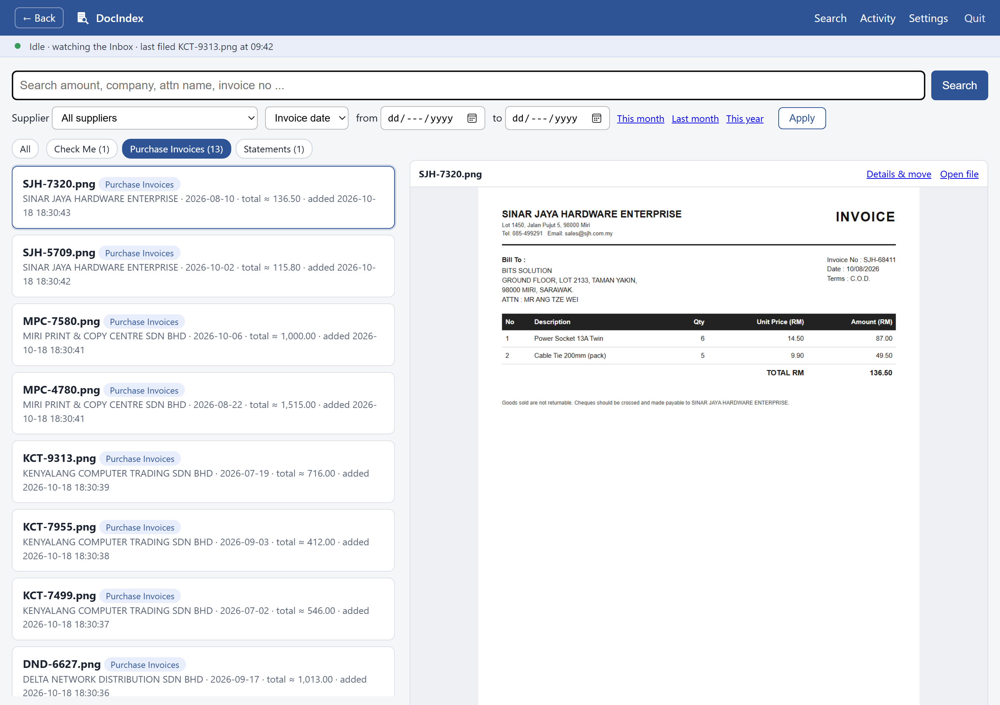
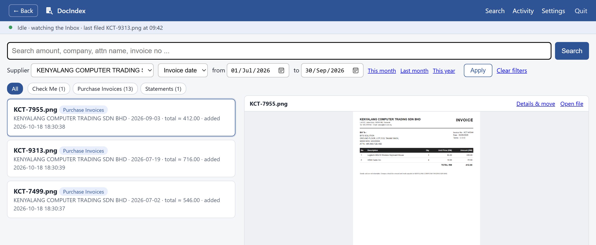
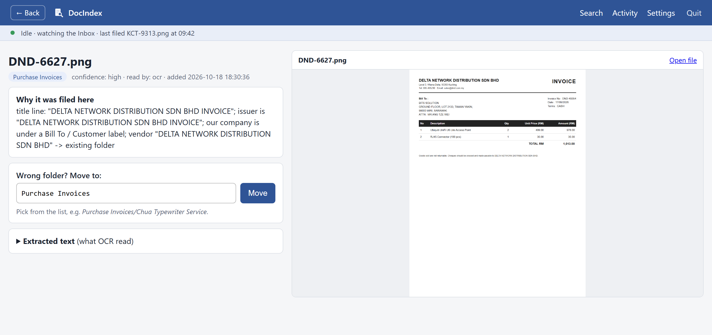

Today
Before- Scans pile up in one "Scan" folder or on the desktop.
- Someone renames and sorts them by hand, when there is time.
- Finding last March's invoice means opening file after file.
- "How much was that invoice?" takes ten minutes.
For offices and accounts teams
Drop your scanned invoices into one folder. DocIndex reads them, files each one under the right supplier, and finds any of them again in seconds.



Download the brochure, or WhatsApp us for a demo.